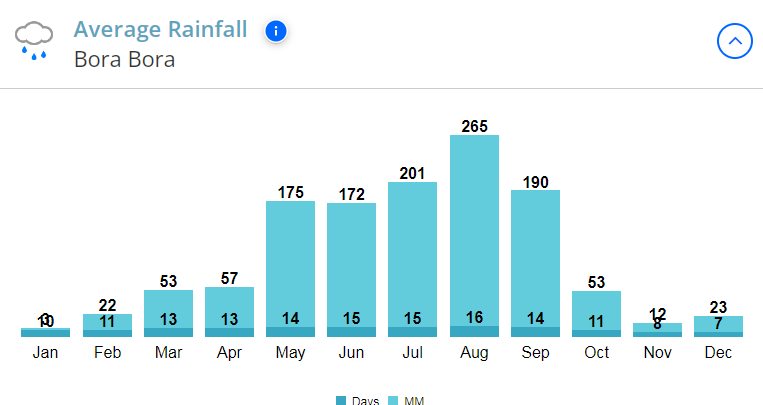

Sites à Voir

Matira Beach
La plage de Matira se trouve à l'extrémité sud de Bora Bora, en Polynésie française. Bora Bora est réputée pour ses lagons époustouflants, ses hautes montagnes et ses paysages luxuriants. La plage de Matira est l'une des plages les plus visitées de l'île.
Caractéristiques de la plage :
Sable blanc et doux : La plage est bordée de sable blanc fin et poudreux, idéal pour se promener ou prendre un bain de soleil.
Eaux cristallines : L'eau est très peu profonde et cristalline, ce qui en fait un endroit idéal pour nager, patauger et profiter d'une sortie en famille.
Lagon coloré : Le lagon présente un assortiment de bleus, allant du turquoise au bleu marine, en fonction de la profondeur et de la lumière.
Récifs coralliens et créatures marines : Les récifs coralliens près de la plage de Matira en font un endroit idéal pour la plongée avec masque et tuba. Les visiteurs aperçoivent souvent plusieurs espèces de poissons tropicaux, des raies et, dans certains cas, des requins.
Vues panoramiques : Depuis la plage, on peut apercevoir le mont Otemanu, le plus haut sommet de l'île, ce qui ajoute à la beauté du paysage en arrière-plan.
Couchers de soleil : La plage est également considérée comme l'un des meilleurs endroits pour assister à un coucher de soleil inoubliable à Bora Bora.

Mount Otemanu
Hauteur : 727 mètres, point culminant de l'île de Bora Bora.
Contexte géologique : Le mont Otemanu est un volcan bouclier éteint qui s'est élevé il y a environ 7 à 10 millions d'années. Il a été créé par une séquence d'éruptions volcaniques qui ont construit l'île de Bora Bora. Comme il s'agit d'un volcan bouclier, sa forme est plate et légèrement inclinée, composée de couches de lave de faible viscosité.
Origine du nom : L'origine du nom « Otemanu » viendrait du tahitien, où « ote » signifie chef ou guerrier et « manu », oiseau. La montagne est typiquement liée à la mythologie locale et à l'héritage culturel.
Flore et faune : Le sommet est entouré d'une épaisse végétation tropicale, de palmiers, de fougères et d'une flore indigène variée. La flore de la montagne est rare mais comprend des oiseaux indigènes, tels que le perroquet de Polynésie.
Randonnée et escalade : La randonnée au sommet est exigeante car la pente est raide et rocheuse. Les touristes préfèrent marcher avec un guide car il n'y a pas de sentiers. Le sommet offre une vue imprenable sur le lagon de l'île, les récifs coralliens et les îles environnantes.
Tourisme : Outre la randonnée, les touristes font surtout des excursions en bateau ou en hélicoptère pour admirer la beauté du mont Otemanu et de l'île sous un angle différent.
Lagoonarium
Le Lagoonarium de Bora Bora est un nouveau parc aquatique situé sur la côte nord de l'île de Bora Bora en Polynésie française. Il a été inauguré en 1984 par Jean-Michel Cousteau, fils du célèbre océanographe Jacques Cousteau. Le Lagoonarium offre aux visiteurs la possibilité de voir de près des animaux marins dans une zone sécurisée et semi-fermée du lagon.
Voici ce qu'il faut savoir sur le Lagoonarium de Bora Bora :
Localisation et accessibilité :
Situé sur la côte est de Bora Bora, près du Motu Piti Aau.
Facile à visiter avec un court trajet en bateau depuis Vaitape, le village de la capitale. La majorité des excursions comprennent le transfert en bateau.
Ce qui est inclus :
Aquarium naturel : Il s'agit d'un aquarium naturel en plein air où les animaux marins peuvent aller et venir plutôt que d'être enfermés.
L'accent est mis sur la conservation : Le Lagoonarium met l'accent sur la protection et la conservation des récifs coralliens locaux et de la faune marine. La pêche est interdite et les activités sont réglementées afin de préserver la santé des animaux.
Autres animaux marins : Attendez-vous à voir une variété de poissons tropicaux (y compris des poissons-perroquets et des poissons-clowns), des raies (raies pastenagues et raies-aigles) et des requins (requins de récif à pointe noire et requins-léopards). Certaines excursions permettent également d'observer des tortues de mer.
Visites guidées : Des visites guidées avec masque et tuba sont proposées au Lagoonarium, avec des informations sur l'écosystème marin et la conservation.
Activités :
La plongée avec masque et tuba : L'activité principale, qui permet de nager à côté des divers animaux marins dans un environnement protégé. Pour tous, y compris les débutants.
Alimentation des poissons : L'alimentation des poissons est incluse dans la plupart des excursions.
Nourrir les requins et les raies : Il s'agit d'une expérience très populaire et bien encadrée qui vous permet d'observer et d'apprendre à connaître ces animaux de près à des heures de nourrissage spécialement organisées par le personnel.
Ateliers éducatifs : Certaines visites ou le Lagoonarium lui-même peuvent inclure des détails éducatifs sur la biologie marine et la conservation.
Expériences culturelles : Il peut y avoir des démonstrations occasionnelles d'activités traditionnelles polynésiennes.
Détente : Le motu où se trouve le Lagoonarium dispose parfois de plages pour la détente.
Excursions d'une journée : Elles comprennent parfois un déjeuner traditionnel polynésien au barbecue sur un motu voisin et parfois une excursion en pirogue.

Resorts
Bora Bora est réputée pour ses complexes hôteliers haut de gamme, dont la plupart disposent des légendaires bungalows sur l'eau qui ont un accès direct au lagon d'un turquoise limpide. Voici quelques-unes des stations balnéaires les plus réputées de Bora Bora :
Stations de luxe :
Four Seasons Resort Bora Bora : Ce complexe 5 étoiles propose des bungalows sur l'eau et des villas en bord de mer avec piscine, une vue imprenable sur le mont Otemanu, des restaurants gastronomiques, un spa et un lagonarium. Il est loué pour son service et son environnement pittoresque.
Le St. Regis Bora Bora Resort : Regis, un autre établissement 5 étoiles, propose certains des plus grands bungalows sur l'eau du Pacifique Sud, un service irréprochable, une plage isolée, plusieurs restaurants dont celui du célèbre chef Jean-Georges Vongerichten, et deux magnifiques piscines.
Conrad Bora Bora Nui : Ce complexe 5 étoiles propose des villas sur l'eau et des villas à flanc de colline avec piscine privée, un accès à un îlot privé, une longue plage de sable blanc, diverses options de restauration et un récif dynamique pour la plongée avec masque et tuba.
InterContinental Bora Bora Resort & Thalasso Spa : Ce complexe 5 étoiles est situé sur son propre îlot et propose de spacieuses villas sur l'eau avec vue sur le mont Otemanu. Il est réputé pour son design moderne avec des touches polynésiennes et son système de climatisation par eau de mer.
Le Bora Bora by Pearl Resorts : Ce complexe 4,5 étoiles, membre de Relais & Châteaux, propose des bungalows au thème traditionnel dans un jardin tropical, en bord de plage ou au-dessus de l'eau, avec une vue imprenable sur le mont Otemanu et à proximité de l'aéroport et du continent.
The Westin Bora Bora Resort & Spa : Ce complexe 5 étoiles propose des bungalows sur l'eau et des villas sur la plage avec des équipements de luxe, quelques restaurants, un spa et des activités sur le mont Otemanu.
Aménagements des bungalows au-dessus de l'eau :
Quelques bungalows sur l'eau sont disponibles à Bora Bora :
Un accès facile au lagon pour la plongée avec masque et tuba et la natation.
Des terrasses privées avec des coins salons et parfois des hamacs.
Des sections à fond de verre pour jeter un coup d'œil vers le bas et voir la vie marine.
Des équipements de luxe et des aménagements spacieux.
Vues imprenables sur le lagon et/ou le mont Otemanu.
Certains des bungalows les plus luxueux disposent également d'une piscine privée.
Lorsque vous choisissez un complexe, tenez compte de votre budget, du degré de luxe que vous souhaitez, de l'endroit que vous préférez (sur l'île principale ou sur un motu isolé), ainsi que des activités et des aménagements que vous souhaitez. Bora Bora propose plusieurs types de centres de villégiature qui vous permettront de passer des vacances tropicales inoubliables.
Le drapeau de Bora Bora représente une pirogue naviguant sous un soleil levant doré.
Les x qui représentent les cinq membres de l'équipage de la pirogue représentent les cinq groupes d'îles. Le rouge et le blanc sont les couleurs traditionnelles de la Polynésie.
Write about this achievement
1. Heiva i Bora Bora (juillet)
Ce que c'est : La plus grande fête culturelle de Bora Bora et de toute la Polynésie française.
Activités : Concours de danses traditionnelles, chants, tambours, sports (comme les courses de pirogues à balancier) et expositions d'artisanat.
Date : elle a lieu en juillet et coïncide avec le jour de la Bastille.
2. Fête de la Bastille (14 juillet)
Ce que c'est : Une fête nationale française commémorant la Révolution française.
Comment elle est célébrée : Défilés, musique, danse et festivités publiques. Elle est souvent combinée avec les célébrations de la Heiva.
3. Journée des missionnaires (5 mars)
Ce que c'est : Elle marque l'arrivée des premiers missionnaires chrétiens en Polynésie française en 1797.
Célébrations : Services religieux et commémorations historiques.
4. Noël (25 décembre) et Nouvel An (1er janvier)
Ce que c'est : Fêtes chrétiennes traditionnelles célébrées dans toutes les îles.
Comment on le célèbre : Réunions de famille, festins, services religieux et festivités sur la plage.
5. Pâques (date variable)
Comment elle est célébrée : Services religieux, rassemblements communautaires et fêtes locales, mélangeant les traditions chrétiennes et polynésiennes.
6. Jour de l'Armistice (11 novembre)
Ce que c'est : Honore la fin de la Première Guerre mondiale.
Observé comme : Un jour férié avec des cérémonies, surtout à Papeete mais aussi à Bora Bora.
7. Nouvel An chinois (janvier/février)
Pourquoi : en raison de la présence d'une importante communauté sino-tahitienne.
Célébrations : Danses du dragon, feux d'artifice et plats traditionnels, plus fréquents dans les grandes villes mais toujours reconnus à Bora Bora.
Dans l'ensemble, la température à Bora Bora est exceptionnelle.
Le mois le plus froid est de 20 degrés et le plus bas de 14 degrés (Celsius),
et le mois le plus chaud est de 32 degrés et le plus bas de 25 degrés (Celsius).

Bien que Bora Bora soit très chaude, elle vous rafraîchit souvent.
Avec un nombre de jours de pluie allant de 7 à 16 fois par mois,
Bora Bora ne manque pas de pluie.
-
Vêtements
À Bora Bora, le style vestimentaire reflète le climat tropical et l'atmosphère détendue de l'île.
Les tissus légers et respirants comme le coton et le lin sont privilégiés pour rester au frais dans la chaleur.
Les touristes portent généralement des maillots de bain, des sarongs, des robes de soleil et des tongs pendant la journée, tandis que les tenues décontractées des centres de villégiature sont populaires le soir. Les vêtements traditionnels polynésiens comprennent le pareo (un tissu enveloppant coloré) et le hei (couronne de fleurs), qui sont souvent portés lors des représentations et des cérémonies culturelles.
La modestie respectueuse est de mise lors de la visite de villages ou de sites sacrés.
-
Brève Histoire
Bora Bora a été colonisée par les Polynésiens dès le 4e siècle.
En 1769, l'explorateur britannique James Cook a visité l'île, qui est ensuite devenue un protectorat français au XIXe siècle.
Pendant la Seconde Guerre mondiale, les États-Unis ont utilisé Bora Bora comme base de ravitaillement militaire, construisant une piste d'atterrissage qui est toujours utilisée aujourd'hui.
L'île a ensuite été rattachée à la Polynésie française et, au fil du temps, elle est passée du statut de paradis isolé à celui de destination de voyage luxueuse.
-
Loisirs
La vie à Bora Bora tourne autour de la nature et de la mer.
Les loisirs les plus populaires sont la plongée avec masque et tuba, la plongée sous-marine, le paddleboard et le jet ski dans le lagon cristallin.
Les habitants et les visiteurs aiment pêcher, fabriquer des objets artisanaux et danser sur des rythmes polynésiens traditionnels.
La détente est également une activité appréciée, qu'il s'agisse de bronzer sur une plage de sable blanc ou de bénéficier d'un traitement de spa dans un bungalow au-dessus de l'eau.
-
Les Sports
Les sports nautiques règnent en maître à Bora Bora, où la plongée avec masque et tuba, la plongée sous-marine, le surf et le paddleboard attirent des aventuriers du monde entier.
Le lagon calme de l'île est parfait pour le kitesurf et le stand-up paddleboard, tandis que la pêche en haute mer et les excursions pour nourrir les requins offrent d'autres sensations fortes.
Les sports traditionnels, comme les courses de canoës à balancier, conservent une importance culturelle, en particulier lors des festivals et des événements locaux.
-
Alimentation
La cuisine de Bora Bora est une fusion entre le style français et la tradition polynésienne.
Les fruits de mer frais dominent le menu - pensez au poisson cru (thon cru mariné dans du jus de citron vert et du lait de coco), au mahi-mahi grillé et à la langouste.
Les fruits tropicaux comme la mangue, la papaye et la noix de coco sont courants.
Les pâtisseries et les fromages français sont importés du continent, ce qui ajoute de la richesse aux repas.
Les repas sont souvent pris à l'extérieur, offrant une vue imprenable sur le lagon et le coucher du soleil.
-
Pourquoi s'y rendre ?
Bora Bora est une destination de rêve pour les voyageurs en quête de beauté naturelle, de détente et de richesse culturelle.
Ses emblématiques bungalows sur l'eau, son lagon turquoise et ses montagnes luxuriantes offrent une évasion digne d'une carte postale.
Que vous soyez à la recherche d'un isolement romantique, d'aventures aquatiques passionnantes ou simplement d'un lieu de détente, Bora Bora vous offre tout ce dont vous avez besoin.
La chaleur de la population locale et l'atmosphère paisible de l'île en font une escapade unique.

Credits
https://www.tahititourisme.com/wearing-a-pareo
https://farandawayadventures.com/things-you-need-to-know-about-traditional-dress-in-tahiti
https://loveborabora.com/heivaiborabora
https://bora-bora-insider.com/heiva-i
https://www.tripadvisor.com/Attractions-g311415-Activities-c61-t270-Bora_Bora_Society_Islands.html
https://www.leborabora.com/en-gb/activities/water
https://cookinginspiredbylove.com/poisson-cru
https://wanderinparadise.com/poisson-cru-in-bora-bora
https://www.holiday-weather.com/bora_bora/averages/
https://www.tahititourisme.com/discover/tahitian-culture/polynesian-musical-instruments
https://www.outofoffice.com/french-polynesia/bora-bora/things-to-do/music-and-dance
https://www.talifitborarace.com
https://www.pgcruises.com/sports-activity
https://bora-bora.org/french-polynesia/history
https://wanderinparadise.com/history-of-bora-bora
https://en.wikipedia.org/wiki/Mount_Otemanu
https://triptahiti.com/blog/10-interesting-facts-about-bora-bora
https://www.tahititourisme.com/why-everybody-should-visit-bora-bora-at-least-once
https://triptahiti.com/blog/10-interesting-facts-about-bora-bora